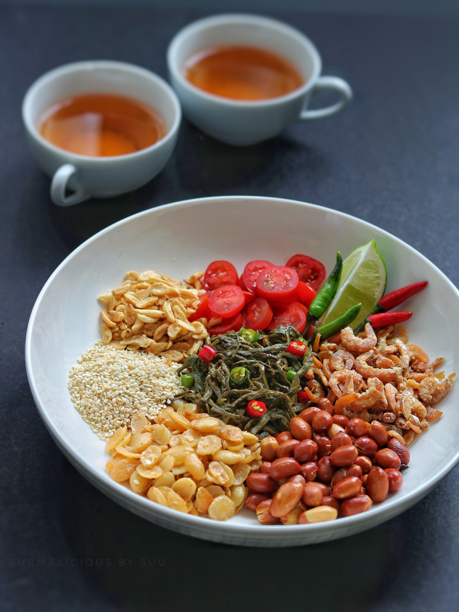

Laphet Thoke

Description
Laphet Thoke or Tea Leaf Salad is not only the most famous
and adored of all Burmese salads, it holds a significant
cultural importance. Highly regarded as the king of all
leaves, laphet is a perfect appetizer, snack, dessert,
palate cleanser, stimulant and can even become a full
course meal with just a bowl of hot steamed rice.
Lahpet Thoke is enjoyed for its complex taste, combining
the sourness of the fermented tea leaves, the crunchiness
of the vegetables, the nuttiness of the peanuts, and the
spiciness of the chili peppers. It’s a prime example of
the diversity and uniqueness of Burmese cuisine.
Ingredients
- 3 tbsp. Laphet or fermented tea leaves, unflavored
- 1 tbsp. Peanut oil
- 1 tsp. Fish sauce
- 1 tsp. Lime juice
- ¼ cup cabbage, shredded
- 2 Roma Tomatoes or 10 grape tomatoes, thinly sliced
- 3 fresh green Chilies, chopped (adjust according
to your spice tolerance)
- 2 tbsp. fried or roasted Peanuts
- 1 tbsp. Sesame seeds, toasted till fragrant and
golden
- 4 cloves of Garlic, sliced and deep fried till
golden and crispy
- 2 tbsp. Dried shrimps
- 2 tbsp. dried Lima beans, deep fried till golden
and crispy
Steps
- Flavor the laphet with peanut oil, fish sauce
and lime juice.
- In a bowl, add and thoroughly toss all ingredients
together.
- On top of a bed of cabbage, put flavored laphet
in the center and arrange the rest of the ingredients
out nicely.
- Pick and eat as you like!